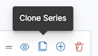

TSVB
editTSVB is a set of visualization types that you configure and display on dashboards.
With TSVB, you can:
- Combine an infinite number of aggregations to display your data.
- Annotate time series data with timestamped events from an Elasticsearch index.
- View the data in several types of visualizations, including charts, data tables, and markdown panels.
- Display multiple data views in each visualization.
- Use custom functions and some math on aggregations.
- Customize the data with labels and colors.
Open and set up TSVB
editOpen TSVB, then configure the required settings. You can create TSVB visualizations with only data views, or Elasticsearch index strings.
When you use only data views, you are able to:
- Create visualizations with runtime fields
- Add URL drilldowns
- Add interactive filters for time series visualizations
- Improve performance
Creating TSVB visualizations with an Elasticsearch index string is deprecated and will be removed in a future release. By default, you create TSVB visualizations with only data views. To use an Elasticsearch index string, contact your administrator, or go to Advanced Settings and set metrics:allowStringIndices to true.
- On the dashboard, click Select type, then select TSVB.
- In TSVB, click Panel options, then specify the Data settings.
- Open the Data view mode options next to the Data view dropdown.
- Select Use only Kibana data views.
- From the Data view dropdown, select the data view, then select the Time field and Interval.
-
Select a Drop last bucket option.
By default, TSVB drops the last bucket because the time filter intersects the time range of the last bucket. To view the partial data, select No.
- To view a filtered set of documents, enter KQL filters in the Panel filter field.
Configure the series
editEach TSVB visualization shares the same options to create a Series. Each series can be thought of as a separate Elasticsearch aggregation. The Options control the styling and Elasticsearch options, and are inherited from Panel options. When you have separate options for each series, you can compare different Elasticsearch indices, and view two time ranges from the same index.
To configure the value of each series, select the function, then configure the function inputs. Only the last function is displayed.
-
From the Aggregation dropdown, select the function for the series. TSVB provides you with shortcuts for some frequently-used functions:
- Filter Ratio
- Returns a percent value by calculating a metric on two sets of documents. For example, calculate the error rate as a percentage of the overall events over time.
- Counter Rate
- Used when dealing with monotonically increasing counters. Shortcut for Max, Derivative, and Positive Only.
- Positive Only
- Removes any negative values from the results, which can be used as a post-processing step after a derivative.
- Series Agg
- Applies a function to all of the Group by series to reduce the values to a single number. This function must always be the last metric in the series. For example, if the Time Series visualization shows 10 series, the sum Series Agg calculates the sum of all 10 bars and outputs a single Y value per X value. This is often confused with the overall sum function, which outputs a single Y value per unique series.
- Math
- For each series, apply simple and advanced calculations. Only use Math for the last function in a series.
-
To display each group separately, select one of the following options from the Group by dropdown:
- Filters — Groups the data into the specified filters. To differentiate the groups, assign a color to each filter.
- Terms — Displays the top values of the field. The color is only configurable in the Time Series chart. To configure, click Options, then select an option from the Split color theme dropdown.
- Click Options, then configure the inputs for the function. For example, to use a different field format, make a selection from the Data formatter dropdown.
TSVB visualization options
editThe configuration options differ for each TSVB visualization.
Time Series
editBy default, the y-axis displays the full range of data, including zero. To automatically scale the y-axis from
the minimum to maximum values of the data, click Data > Options > Fill, then enter 0 in the Fill field.
You can add annotations to the x-axis based on timestamped documents in a separate Elasticsearch index.
All chart types except Time Series
editThe Data timerange mode dropdown in Panel options controls the timespan that TSVB uses to match documents. Last value is unable to match all documents, only the specific interval. Entire timerange matches all documents specified in the time filter.
Metric, Top N, and Gauge
editColor rules in Panel options contains conditional coloring based on the values.
Top N and Table
editWhen you click a series, TSVB applies a filter based on the series name. To change this behavior, click Panel options, then specify a URL in the Item URL field, which opens a URL instead of applying a filter on click.
Markdown
editThe Markdown visualization supports Markdown with Handlebar (mustache) syntax to insert dynamic data, and supports custom CSS.
Open and edit TSVB visualizations in Lens
editWhen you open TSVB visualizations in Lens, all configuration options and annotations appear in the Lens visualization editor.
You can open the following TSVB visualizations in Lens:
- Time Series
- Metric
- Top N
- Gauge
- Table
To get started, click Edit visualization in Lens in the toolbar.
For more information, check out Create visualizations with Lens.
View the visualization data requests
editView the requests that collect the visualization data.
- In the toolbar, click Inspect.
- From the Request dropdown, select the series you want to view.
Save and add the panel
editSave the panel to the Visualize Library and add it to the dashboard, or add it to the dashboard without saving.
To save the panel to the Visualize Library:
- Click Save to library.
- Enter the Title and add any applicable Tags.
- Make sure that Add to Dashboard after saving is selected.
- Click Save and return.
To save the panel to the dashboard:
- Click Save and return.
-
Add an optional title to the panel.
- In the panel header, click No Title.
- On the Panel settings window, select Show title.
- Enter the Title, then click Save.
Frequently asked questions
editFor answers to frequently asked TSVB question, review the following.
How do I create dashboard drilldowns for Top N and Table visualizations?
You can create dashboard drilldowns that include the specified time range for Top N and Table visualizations.
- Open the dashboard that you want to link to, then copy the URL.
- Open the dashboard with the Top N and Table visualization panel, then click Edit in the toolbar.
- Open the Top N or Table panel menu, then select Edit visualization.
- Click Panel options.
-
In the Item URL field, enter the URL.
For example
dashboards#/view/f193ca90-c9f4-11eb-b038-dd3270053a27. - Click Save and return.
- In the toolbar, click Save as, then make sure Store time with dashboard is deselected.
How do I base drilldown URLs on my data?
You can build drilldown URLs dynamically with your visualization data.
Do this by adding the {{key}} placeholder to your URL
For example https://example.org/{{key}}
This instructs TSVB to substitute the value from your visualization wherever it sees {{key}}.
If your data contain reserved or invalid URL characters such as "#" or "&", you should apply a transform to URL-encode the key like this {{encodeURIComponent key}}. If you are dynamically constructing a drilldown to another location in Kibana (for example, clicking a table row takes to you a value-scoped saved search), you will likely want to Rison-encode your key as it may contain invalid Rison characters. (Rison is the serialization format many parts of Kibana use to store information in their URL.)
For example: discover#/view/0ac50180-82d9-11ec-9f4a-55de56b00cc0?_a=(filters:!((query:(match_phrase:(foo.keyword:{{rison key}})))))
If both conditions apply, you can cover all cases by applying both transforms: {{encodeURIComponent (rison key)}}.
Technical note: TSVB uses Handlebars to perform these interpolations. rison and encodeURIComponent are custom Handlebars helpers provided by Kibana.
Why is my TSVB visualization missing data?
It depends, but most often there are two causes:
- For Time series visualizations with a derivative function, the time interval can be too small. Derivatives require sequential values.
- For all other TSVB visualizations, the cause is probably the Data timerange mode, which is controlled by Panel options > Data timerange mode > Entire time range. By default, TSVB displays the last whole bucket. For example, if the time filter is set to Last 24 hours, and the current time is 9:41, TSVB displays only the last 10 minutes — from 9:30 to 9:40.
How do I calculate the difference between two data series?
How do I compare the current versus previous month?
TSVB can display two series with time offsets, but it can’t perform math across series. To add a time offset:
-
Click Clone Series, then choose a color for the new series.
 - Click Options, then enter the offset value in the Offset series time by field.
How do I calculate a month over month change?
The ability to calculate a month over month change is not fully supported in TSVB, but there is a special case that is supported if the
time filter is set to 3 months or more and the Interval is 1m. Use the Derivative to get the absolute monthly change. To convert to a percent,
add the Math function with the params.current / (params.current - params.derivative) formula, then select Percent from the Data Formatter dropdown.
For other types of month over month calculations, use Timelion or Vega.
How do I calculate the duration between the start and end of an event?
Calculating the duration between the start and end of an event is unsupported in TSVB because TSVB requires correlation between different time periods. TSVB requires that the duration is pre-calculated.